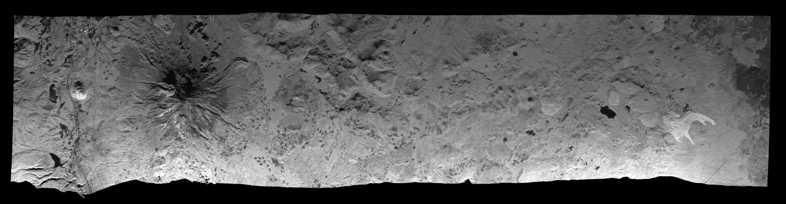

Gamma ISP: Reference Manual
Generate SLC/MLI iamge parameter file for UAVSAR SLC and MLC
data
ANSI-C programs: par_UAVSAR_SLC.c
NAME
par_UAVSAR_SLC - Generate ISP image parameter file
from UAVSAR annotation file (ann) for SLC and MLC data products
SYNOPSIS
par_UAVSAR_SLC <ann> <SLC/MLI_par>
<image_type> <image_format>
| <ann> |
(input) UAVSAR annotation file (*ann.txt) |
| <SLC_par> |
(output) ISP SLC parameter file (example:
yyyymmdd.slc.par) |
| <image_type> |
image type flag
0: SLC (slc) in slant range
coordinates
1: MLC (mlc) in slant range
coordinates
HHHH*, VVVV*,
HVHV* are FLOAT format
HHHV*, HHVV*,
HVVV* are FCOMPLEX format
|
| <image_format> |
image data format flag
0: FCOMPLEX (pairs of 4-byte float
(re,im))
2: FLOAT (4-bytes/value)
|
EXAMPLES
par_UAVSAR_SLC
cscade_06701_09075_001_090928_L090_CX_01.ann.txt
cscade_06701_09075_001_090928_L090_CX_01.mlc.par 1 2
Reads the annotation file cscade_06701_09075_001_090928_L090_CX_01.ann.txt
and generates the cscade_06701_09075_001_090928_L090_CX_01.mlc.par
file. This parameter file should be used with MLC products that
are FLOAT format.
DESCRIPTION
UAVSAR is a reconfigurable
L-Band airborne radar built and operated by JPL http://uavsar.jpl.nasa.gov/.
It can operate in both full polarimetric and repeat track
interferometric modes. Data can be obtained using the
on-line search capability and can be downloaded freely. There are
also sample data products available, see http://uavsar.jpl.nasa.gov/data.html.
Each data set consists of an text format annotation file
consisting of keyword value pairs. The data products that
comprise the data set are listed at the start of the annotation
file. An example of this listing including the file extensing and
description of the individual product files is shown here:
; Parameter file for
cscade_06701_09075_001_090928_L090_CX_01
; search for parameters/value rather than placement in file
; slc = single look complex slant range image
; mlc = multi look cross product slant range image
; dat = compressed stokes matrix of multi-looked data
; grd = ground range projected (equiangular) and multi-looked
data
; hgt = dem that grd were projected
; slc_mag and slc_phase are derived from the same 8 bytes per
pixel of the slc input file
; mlc_mag and mlc_phase are derived from the same 8 bytes per
pixel of the complex mlc input files
; grd_mag and grd_phase ground range projected (equiangular)
complex cross-products image
; Peg position is the nadir position of aircraft at the middle of
the datatake
; Projection of image is relative to the flightline (S - along
track position, C - cross track position)
; S0, C0 is offset to upper left coordinate of SLC in meters
; to display MLC amplitude and phase in mdx:
; mdx -h cscade_06701_09075_001_090928_L090_CX_01.ann
cscade_06701_09075_001_090928_L090HHVV_CX_01.mlc -set mlc_mag
cscade_06701_09075_001_090928_L090HHVV_CX_01.mlc -set
mlc_phase
; general location of data (non-unique)
Site Description = Cascades volcanoes
; URL of JPL website for precision data
URL =
http://uavsar.jpl.nasa.gov/kml/2009/cscade_06701_09075_001_090928_L090_CX_01.htm
; list of precision data files
slcHH =
cscade_06701_09075_001_090928_L090HH_CX_01.slc
; File Size 12739557600 bytes
slcHV =
cscade_06701_09075_001_090928_L090HV_CX_01.slc
; File Size 12739557600 bytes
slcVH =
cscade_06701_09075_001_090928_L090VH_CX_01.slc
; File Size 12739557600 bytes
slcVV =
cscade_06701_09075_001_090928_L090VV_CX_01.slc
; File Size 12739557600 bytes
mlcHHHH =
cscade_06701_09075_001_090928_L090HHHH_CX_01.mlc
; File Size 176932800 bytes
mlcHVHV =
cscade_06701_09075_001_090928_L090HVHV_CX_01.mlc
; File Size 176932800 bytes
mlcVVVV =
cscade_06701_09075_001_090928_L090VVVV_CX_01.mlc
; File Size 176932800 bytes
mlcHHHV =
cscade_06701_09075_001_090928_L090HHHV_CX_01.mlc
; File Size 353865600 bytes
mlcHHVV =
cscade_06701_09075_001_090928_L090HHVV_CX_01.mlc
; File Size 353865600 bytes
mlcHVVV =
cscade_06701_09075_001_090928_L090HVVV_CX_01.mlc
; File Size 353865600 bytes
dat =
cscade_06701_09075_001_090928_L090_CX_01.dat
; File Size 442431000 bytes
grdHHHH =
cscade_06701_09075_001_090928_L090HHHH_CX_01.grd
; File Size 834474168 bytes
grdHVHV =
cscade_06701_09075_001_090928_L090HVHV_CX_01.grd
; File Size 834474168 bytes
grdVVVV =
cscade_06701_09075_001_090928_L090VVVV_CX_01.grd
; File Size 834474168 bytes
grdHHHV =
cscade_06701_09075_001_090928_L090HHHV_CX_01.grd
; File Size 1668948336 bytes
grdHHVV =
cscade_06701_09075_001_090928_L090HHVV_CX_01.grd
; File Size 1668948336 bytes
grdHVVV =
cscade_06701_09075_001_090928_L090HVVV_CX_01.grd
; File Size 1668948336 bytes
hgt =
cscade_06701_09075_001_090928_L090_CX_01.hgt
; File Size 834474168 bytes
kmz =
cscade_06701_09075_001_090928_L090_CX_01.kmz
; File Size 202830277 bytes
The data files themselves are without headers and in
little-endian byte order. To use these files with the Gamma
software, they must be converted to big-endian byte order using
the program swap_bytes. A script has
been written that automates that process by taking a list of
files and swapping the bytes and placing the swapped files in a
specified directory swap_bytes_all.
The different types of data files supported by the Gamma software
are:
SLC:
Single-look complex data, 8 bytes per value (FCOMLEX), 4-bytes
float real (FLOAT), 4-bytes float imaginary (FLOAT), SLCHH,
SLCHV, SLCVH, SLCVV
MLC: Multi-look complex
data. Three of these files are 4-byte/value float: mlcHHHH,
mlcVVVV, mlcHVHV and three are complex valued: mlcHHHV, mlcHHVV,
and mlcHVVV. These products are calibrated and
multi-looked, typically with 3 range-looks and 12 azimuth looks
and are sufficient for full polarimetric analysis.
GRD: These products are
float or FCOMPLEX and have been resampled to geographic
coordinates in latitude and longitude. Use the program
par_UAVSAR_geo to create the Gamma DEM parameter file to describe
these products. The terrain geocoding uses a DEM for the
geocoding. This DEM is also provided in the data set as an
HGT product. See
documentation on par_UAVSAR_geo in the
DIFF package.
Note that the GRD products can be either FLOAT or FCOMPLEX data
format and require byte-swapping just like the MLC or SLC
products.
Because the UAVSAR is an aircraft that does not move at constant
velocity or on a perfectly smooth track, motion compensation is
applied to the data, and a new reference track is created. This
reference track is at a constant altitude and is part of a
spherical orbit with a reference heading relative to North. This
geometry is given the name SCH coordinate system. The coordinate
system is locally defined by a reference point called the peg
point, and a heading angle relative to north that follows the
heading of the radar platform at the peg point. The peg point is
chosed near the center of the track. The projection coordinates
are:
S: Along track distance in meters along the track
relative to the peg point
C: cross-track coordinate in meters
H: altitude above the peg point
SCH is based on an approximating sphere to the ellipsoid at the
peg point. The radius of this sphere is the ellipsoid radius of
curvature in the along-track direction. The h unit vector is
defined as the vector perpendicular to the ellipsoid at the peg
point. It is also perpendicular to the approximating sphere. The
prime meridian is the intersection of the plane perpendicular to
the h
vector containing the sphere center. The s unit vector is
perpendicular to h and is parallel
to the heading vector. The equator of the sphere is the great
circle passing though peg point along the direction of the
heading vector. The heading angle is defined as the clockwise
rototation angle relative to north of the track. The c vector is
defined as h x
s
completing the SCH coordinate system definition.
The state vectors in the ISP parameter are generated using the
SCH geometry track information and then converted to geocentric
XYZ in the WGS84 datum.
A constant velocity for the aircraft of 227 m/s is then used to
create an artificial constant velocity SAR system flying along S
at the reference altitude provided in the annotation file.
Note, because the UAVSAR track can have any direction, the SCH
coordinate system and SCH map projection are preferred. Geocoding
with other map projections will generally have large regions with
0.0 when SAR data are mapped. Furthermore, the DIFF/GEO program
gc_map produces accurate layover-and shadow maps only when the
projection is parallel to the map coordinate axies. Since SCH is
defined parallel to the track, this condition is fulfilled. To
use SCH as the projection, resample initial DEM to SCH
coordinates using DEM_trans. An example image of the sample
data scene of Mount Shasta Volcano in California is shown below.
The track covers is about 90 km long and is parallel to the
bottom of the page

SEE ALSO
Users Guide, typedef_ISP.h, par_UAVSAR_geo,
swap_bytes,
swap_bytes_all
© Copyrights for Documentation, Users Guide and Reference Manual by Gamma Remote Sensing 2012.
CW, last change 15-Nov-2012.